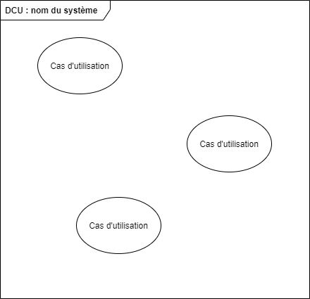
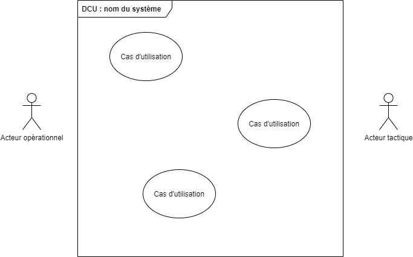
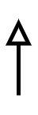

Normes du diagramme de classes
Étape du développement
Analyse
Standard de notation
UML 2.5
Nom anglais
Use case diagram
Système et acteurs
Un diagramme des cas d’utilisation (DCU) présente les entités actrices du système et les relie aux cas d’utilisation qu’ils peuvent réaliser. La base du diagramme est un grand rectangle qui représente le système en lui-même. Dans le rectangle, les différents cas d’utilisation sont placés dans des ovales. Selon la norme UML 2.5, le rectangle peut être omis, mais il est quand même suggéré de le représenter.


Les entités actrices humaines sont représentées par des bonshommes allumettes situés de part et d’autre du système. La position des entité actrices est régie par les règles suivantes :
- Les entités actrices primaires sont situés à gauche du système ;
- Les entités actrices secondaires sont situés à droite du système ;
- Les parties prenantes ne sont pas représentées, car elles ne réalisent pas de cas d’utilisations.


Lorsqu’une entité actrice peut réaliser l’un des cas d’utilisation, un trait plein relie l’entité actrice et le cas d’utilisation. Un même cas d’utilisation peut être associé à plusieurs entités actrices s’il peut être réalisé par plusieurs d’entre elles.
Héritage d'acteurs
On retrouve aussi une relation d’héritage d’acteurs qui signifie qu’un acteur (enfant) peut exécuter tous les cas d’utilisation d’un autre acteur (parent). Cette relation est représentée par une flèche avec une tête vide qui partde l’entité enfant vers l’entité parent.


Exemple : modélisation d'un système de gestion d'une école
Dans la modélisation (partielle) d’un système de gestion d’une école (semblable au système Omnivox), on retrouve les CU suivants :
- Ajouter une nouvelle évaluation ;
- Remettre une évaluation ;
- Saisir les résultats d’une évaluation ;
- Consulter les notes pour un cours ;
- Gérer les accès.
On retrouve aussi les acteurs suivants :
- Personne étudiante ;
- Personne enseignante ;
- Responsable de la coordination départementale (qui est une personne enseignante) ;
- Personne administratrice du système.

Sur le précédent diagramme, on peut observer les éléments suivants :
- Les personnes étudiantes, personnes enseignantes et personnes responsables de la coordination départementale sont des acteurs opérationnels (primaires). Les personnages qui les représentent sont à gauche de la boîte qui symbolise le système.
- Les personnes administrant le système sont des acteurs tactiques (secondaires). Ils sont représentés à droite de la boîte qui symbolise le système.
- La personne responsable de la coordination départementale hérite de l’acteur « personne enseignante », car il s’agit d’une personne enseignante avec des responsabilités supplémentaires.
- Les personnes étudiantes peuvent remettre une évaluation et consulter les notes pour un cours qu’elles suivent.
- Les personnes enseignantes peuvent ajouter une nouvelle évaluation ou saisir les résultats d’une évaluation.
- Les personnes responsables de la coordination départementale et les personnes administrant le système peuvent toutes deux gérer les accès. Si l’exécution du cas prévoit des droits différents dans la gestion des rôles, cette différence est explicitée au niveau des descriptions des cas.
Relations entre les cas d'utilisation
Les cas d’utilisations peuvent être liés entre eux par deux types de relations. Ces relations sont :
- Extend : indique que le comportement d’un cas d’utilisation peut être étendu par un autre cas d’utilisation. L’endroit où l’extension peut se produire est présenté par des points d’extension. Le CU dont le comportement est modifié ne sait pas que son comportement est modifié.
- Include : indique que la réalisation d’un cas d’utilisation peut demander la réalisation d’un autre CU. La description du CU qui en inclut un autre spécifie les conditions de réalisation.
Les cas d’utilisation peuvent définir des points d’extension qui sont des opérations (étapes) du CU auxquelles il est possible d’ajouter plus de scénarios alternatifs que ce qui est précisé dans la description du cas d’utilisation.
On peut utiliser la relation include dans deux contextes :
- Une opération est commune à plusieurs CU : on déplace cette opération dans un nouveau CU et chacun des CU qui l’utilisent include le nouveau CU.
- Un CU est très complexe, alors on le décompose en plus petits CU et il include chacune des parties créées.


Bonnes pratiques
L’utilisation des relations, en particulier include, permet de simplifier l’écriture des descriptions des CU. Cependant, une utilisation trop importante de ces relations sur le DCU risque d’en diminuer la lisibilité et donc l’utilité.
Il faut donc, lorsqu’on prépare le DCU, se limiter à illustrer uniquement les relations qui apportent une information supplémentaire significative. Par exemple, indiquer qu’un CU qui traite des paiements inclus le CU de paiement par carte de crédit est tout à fait adéquat. Par contre, indiquer pour 80% des CU qu’ils incluent comme opération préalable le CU de vérifier l’authentification alourdit grandement la notation sans apporter de nouvelle information significative et est, par conséquent, une pratique à éviter.
La distinction entre include et extends
Pareil : la relation include et la relation extend servent toutes deux à représenter la possibilité de réaliser un CU dans un autre CU.
Différent : dans la relation include, la description du CU qui en inclut un autre précise dans quelles conditions le cas inclus se réalise. La relation extend le CU inclut se greffe au cas principal par un des points d’extension du CU principal. La description du cas principal ne précise pas quand le CU inclus se réalise.
Exemple : relations entre CU dans le système de gestion d'une école

Dans la modélisation d’un système de gestion d’école tel que présenté à l’exemple 3.1, on peut utiliser la relation include dans la situation suivante :
- Envoyer un message lorsqu’un nouveau travail ou une nouvelle note d’évaluation est disponible. Comme les deux CU réalisent la même opération, on peut donc la définir dans un CU qui lui est propre.
On peut utiliser la relation extend dans la situation suivante :
- Ajouter une ressource à une évaluation. Comme on ne peut pas définir tous les types de documents ou ressources que l’on peut joindre à une évaluation (document word, excel, powerpoint, pdf...), on peut ouvrir le cas « Ajouter une évaluation » en lui définissant le point d’extension « Ajouter une ressource ». Par la suite, on pourra définir un cas d’utilisation pour chaque type de ressource que l’on trouvera pertinent de joindre à une évaluation. L’ajout de nouveau type de ressource ne modifiera pas le cas de base d’« Ajouter une évaluation ».